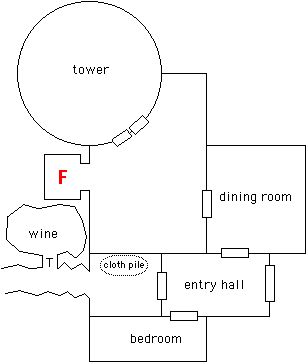

aving defeated the two giants the adventurers were finally able to examine
their surroundings. The shifting slope of shale led to a high mountain valley,
surrounded on three sides by solid rock. The valley was seven hundred feet long
and roughly the same width at its widest point. At the far end and built
against a steep cliff was a small fortress, presumably that of Desatysso. It
was a single story fortified manor house with a tower on one side. Once
surrounded by a courtyard of red brick, it was now heavily overgrown.
aving defeated the two giants the adventurers were finally able to examine
their surroundings. The shifting slope of shale led to a high mountain valley,
surrounded on three sides by solid rock. The valley was seven hundred feet long
and roughly the same width at its widest point. At the far end and built
against a steep cliff was a small fortress, presumably that of Desatysso. It
was a single story fortified manor house with a tower on one side. Once
surrounded by a courtyard of red brick, it was now heavily overgrown.
Meanwhile Mystical had cast a Reduce Gravity spell affecting a spherical area between the giants and the party, so that any hurled boulders would have their flight path modified and soar harmlessly overhead. She then caused a small brush fire in the grass as an additional distraction. When the four giants attacked the illusionary halfling, Kurik drew his battle axe and charged toward them.
Rosvenir teleported to one side of the keep as soon as the four rushed out of the entrance. He produced a Light Eruption in front of the closest giant, but a stroke of bad luck had the giant close its eyes and resist the spell. Rosvenir ducked behind the corner of the keep, and soon a more powerfully cast Light Eruption stunned the two closest giants.
Slowly, the invulnerable halfling picked itself up from the ground where it had been flattened. Reaching over its back to draw an impossibly large sword, it rushed towards the keep at a run. This confused the giants immensely as they had never seen an enemy get up after being hit by four boulders. Thus they were distracted from the real threat: Kurik. The giants sent another rock crashing into the faux hobbit, and one at Kurik which bounced off of the Deflections spell he had previously cast.
Mystical and Kahlen also rushed towards the giants, though they could not run as quickly as the paladin. Haer walked slowly across the field while concentrating to control the spell. When the faux halfling was hit by the second attack Haer was unable to make it fall convincingly: the boulder had quite obviously passed through the illusion. Deciding it had served its purpose Haer left his fake twin lying on the ground and ran towards the keep behind everyone else (halfling legs being shorter than most). Rosvenir peeked out from behind the corner to cast a Blindness spell on the third giant causing it to grab its head and panic, running away from the keep.
Kurik reached the giants first. Screaming a war cry he hacked at the fourth giant. Unfortunately the creature held another boulder which it had prepared to throw and instead brought down heavily on Kurik's head. The paladin's helmet rang like a bell and he was knocked unconscious. The giant raised the boulder above its head, preparing to finish the job.
Mystical and Kahlen were at this point almost a hundred feet away from Kurik. Kahlen skidded to a stop and loosed an arrow, grazing the giant's forehead and causing it to stagger back a step. Mystical put up a Circle of Fire as she ran, placing the barrier between the giant and the fallen paladin. Haer used the teleportation ability of his cloak to move closer to the keep, and quickly cast a Sleep spell which found its target. The giant fell into a deep magical slumber, dropping the boulder and pitching forward into the fire where its loincloth and body hair caught fire.
Reaching the keep at roughly the same time Kahlen pulled Kurik away from the flames and began to administer aid while Mystical slit the throat of the giant who had threatened him. This left two giants on the field, as one of the two stunned by Rosvenir's Light Eruption had staggered back into the keep and barred the door. One of the two remaining giants was running fast away, but couldn't see to run straight and came about in a wide circle back towards the keep. The other giant had been menacing Rosvenir, but two Starbolts had crippled both of its legs. Haer sent a sling bolt at that one, breaking its hand.
Kahlen knelt next to the wounded paladin. The blow to the head had been severe, but not fatal. Kurik had a concussion which would leave him unconscious and defenseless for hours. This simply would not do in the middle of a battlefield. Kahlen used healing magics to repair the bruising to the skull and grey matter, and poured energy into the paladin to help him recover. Then she slapped him. Kurik came instantly awake.
The blind giant had come full circle. It ran straight into and
through the flaming circle, where in a continuing plot thread its loincloth
caught fire. Unfortunately just past the circle of fire was the wall of the
keep into which the giant barrelled head first. The ground shook from the
impact, and the giant crumpled heavily. Mystical decided to take the
opportunity thus presented. Dropping the flaming circle, she crouched beside
the fallen giant and cast Mind Probe.
Who is your leader?
Clear image of female giant, standing inside a stone room pointing
at a metal door, indicating to go out and face the intruders.
Image fades, followed by an older female giant bossing the young
female about.
How did you come to this place?
A happy image of giant toddlers running around a brightly
lit castle, with several older giant females tending to them.
The castle is well furnished in the memory, with bright red
pavestones surrounding it.
Rosvenir sent a third Starbolt crashing into the giant facing him. Said giant had crouched down to pick up a boulder and so the bolt struck it midsection and, you guessed it, set its loincloth on fire. The giant decided that putting out the flames was top priority, and dropped the rock. Kahlen took careful aim and sent an arrow straight into its left eye. The giant fell to the ground, quite dead, with its loincloth burning merrily.
The blinded giant stood, and shook its head. It was impossible to know if it could feel the Mind Probe or even conceive of what was happening. The only thing certain was that the blindness had worn off: the giant reached down to grab a nearby club. Kurik was back in action, and swung his axe in a wide arc knocking the club from the giant's hand and continuing on to break its lower leg. The giant stumbled back against the wall of the castle.
Are there any humans living in the castle?
Twinges of fear and brief image of Kurik's axe descending.
Dissolve to a memory of an old man in robes who appears to be studying
at a desk. Viewpoint shifts to turn away from the desk; the giant
is running an errand for the man. The castle is in good repair in
the vision. The memory is an old one.
The giant swung a meaty fist at Kurik, narrowly missing. Kurik's axe struck again.
Are there any secret places in the castle?
Wave of tangible fear. Dim vision of a rough hewn cave,
too small for a giant to traverse.
Kurik's final backswing finished the creature.
Are there any hidden items in the castle?
Vision fading to black. Can barely see a pile of tattered
cloth and tapestries.
The giant died. Mystical ended the spell.
The fourth giant had fled back into the keep during the battle,
barring the door. An impressive edifice, the door was ten feet wide, fifteen
feet high, and made of solid steel. It was encased in a black enamel, chipped
in places, and embossed with runes. With at least three giants inside (the one
who fled and the two females revealed via Mystical's spell) it was decided that
a frontal assault would be stupid. Several other potential entrances were
noted. The third floor of the tower had collapsed and was open to the sky.
Several windows gave access to the second floor, though they were too small for
anyone save Haer to squeeze through.

The best option seemed to be the tower. Everyone climbed or flew up
and into the hollow shell of the building, the interior having collapsed long
ago. Broken beams and rubble were strewn about the floor. The tower was
circular, twenty feet in radius, and judging from the debris scattered about
had once housed a magical workshop and study. Broken wands and staves and other
once-magical paraphernalia peeked from beneath the trash. Haer went immediately
to the double doors to one side, checking the circular pull for traps. He was
rewarded with signs of an intricate mechanism which would trigger something if
pulled. It was easily disabled.
Mystical searched the room while Haer worked on the trap, and found a nearly invisible crack in the floor. Using a thin crowbar the hidden compartment was opened, revealing a small silver key. The key radiated no magic.
Various party members cast Detect Life, Detect Enemies, Presence, etc. Only one being was located in the castle, and it was very close. Life Typing determined that the creature was completely alien. Mystical felt like she knew what sort of creature it was, but couldn't quite place it. Rosvenir cast Merge Stone, allowing him to slowly walk through the wall of the tower towards the presence. He walked to the edge of the next room, which looked like a fireplace in which an enormous fire roared. Even from two inches within the stone Rosvenir could feel the heat. Strangely, there was no fuel for the fire, it burned as if from the bare rock. It was an elemental.
A battle plan developed. Spells providing resistance to heat and fire were cast, plus general defensive magics. Kurik would pull the door wide and Mystical would create a Wall of Ice to trap the elemental within the fireplace.
Things didn't work quite as planned. The instant Kurik pulled the door open the elemental darted from the fireplace towards the doors. Rosvenir let a Vacuum spell fly, stopping the living flame and causing it to stagger back a step. Thinking quickly, Mystical shaped the wall of ice into a cylinder stretching floor to ceiling, trapping the elemental within. A wall of water and a second wall of ice were quickly cast, surrounding the first. A dancing light could be seen trapped deep inside, but the walls held. After several minutes everyone relaxed their stance, and Haer examined the door on the far side of the chamber. The rest searched the room, finding nothing of note.
Leaving the trapped elemental behind, the next room was explored. It had been a dining area, the remains of a large oak table and chandelier laying on the floor. The room beyond was the entrance hall, where a slime choked fountain dominated the center of the room. The giants had left a smoldering fire pit in one corner and had barred the door, but then apparently fled. Kurik unbarred the door in case a quick exit was needed, and Haer placed a Sensory Marker to be able to magically scry the area later.
Two doors remained. The far door led to a bed chamber, with a pile
of smashed wood and silk and little else. [Editor's note: though in an
amazing statistical coincidence Mystical and Kurik both rolled 69 on their
Locate Hidden rolls, one of many such rolls throughout the session].

The near door opened onto a small chamber,
where a rough hewn tunnel led deeper into the mountain. A pile of ruined
tapestries and cloth lay on one side of the room, exactly as Mystical had seen
in the mind of the giant. Haer searched through the pile while everyone else
stood guard against anything that might emerge from the tunnel. He found a
battered silver goblet (its twin was stashed in Haer's pouch before anyone else
saw it), a gold chain clasping a small ruby, and a silver mirror framed with
fine hardwood. None of these items was magical.
The entire mansion had been explored. The only place left to look for Desatysso and information concerning the Devourer was the tunnel leading deep into the mountain. The tunnel was roughly fifteen feet tall and ten feet wide. A few feet from the entrance a side tunnel branched. This second tunnel was much smaller, roughly eight feet high, and clearly too small for a seventeen foot giant to traverse. This was the secret place Mystical had seen in the giant's memory. Having finished checking every door in the mansion carefully for traps, Haer walked into the side tunnel with nary a care in the world. The pressure plate in the floor triggered the far wall to slam across the tunnel, crushing Haer and knocking Kurik about. Haer saw his life pass before his eyes and felt pain beyond description as if a rib had pierced his heart and he would die within six rounds. Fortunately it was just his imagination; after expenditure of a Fate point and a more reasonable critical roll by the GM he merely had a few cracked ribs.
Kahlen healed Haer's broken bones, and the edges of the pressure plate were chalked so as to more easily avoid it. The room beyond held a wine cellar, with racks floor to ceiling holding fine wines from the surrounding countryside. The most recent vintage was twenty seven years prior, though some were far older. There were 87 bottles altogether. They would not all fit in Haer's bag of holding, so a dozen of the best were taken. The rest went into Kurik's tithing bag, which magically transports anything placed within to a room at the temple of Pandeos.
On the way back out of the room Haer fumbled a maneuver roll, tripped, and triggered the damn trap again. This second time merely broke his leg, which Kahlen mended. The rest of the party secretly vowed to find a better thief.
[Editor's note: We counted. A 69 was rolled at least 14
times during the gaming session.]